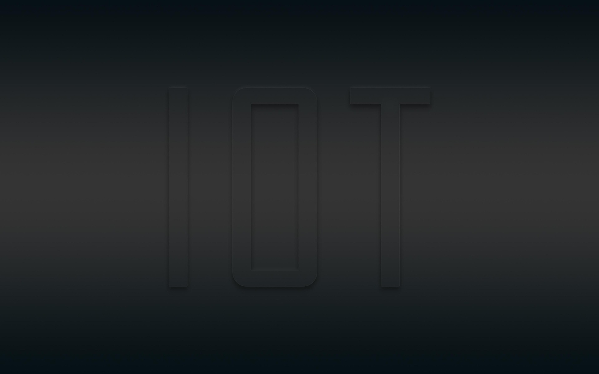

Where Smart Technology Meets Real-World Innovation
IoT & Information Engineering combines embedded systems, software development, networking, and data technologies to create intelligent solutions for the future. Students learn through hands-on projects, modern laboratories, and practical experiences that prepare them for careers in smart technology and digital innovation.

Build Skills for the Technology of Tomorrow
Our program is designed to prepare students for the future through practical learning, modern technology, and real-world experience in smart systems and digital innovation.
Hands-on Learning
Gain experience through real projects, laboratory work, and practical assignments that strengthen both technical and problem-solving skills.
Modern Technology
Learn key technologies including embedded systems, IoT devices, networking, software development, and smart applications.
Future Career Paths
Prepare for careers such as IoT Engineer, Software Developer, System Designer, Data Specialist, and other technology-driven roles.
Innovation Mindset
Develop creativity and critical thinking to design solutions that connect technology with real-world needs and future opportunities.
Explore the Technologies Behind Smart Systems
Our curriculum combines hardware, software, networking and data technologies to build intelligent systems for the connected world.
Embedded Systems
Learn how hardware and software work together to control smart devices and electronic systems.
Internet of Things
Connect devices and sensors to create intelligent networks and smart environments.
Software Development
Design and build modern applications for web, mobile, and connected systems.
Data & AI
Analyze data and apply intelligent algorithms to develop smarter technology solutions.
Networking
Understand communication systems that allow devices and platforms to interact seamlessly.
Smart Systems
Integrate technologies to build real-world intelligent systems and automation solutions.
Learn by Building Real-World Innovation
Students gain practical experience through laboratory work, project-based learning, and technology-driven activities that connect ideas with real applications.
Meet Our Faculty Members
Learn from experienced instructors and researchers who guide students in technology, innovation, and real-world problem solving.
Stay Updated with IoTE News
Explore the latest announcements, student activities, and important updates from the department.